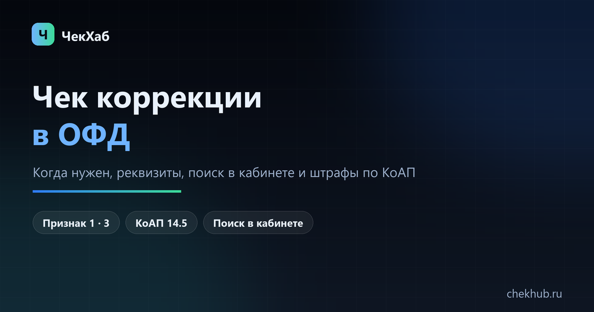

Чек коррекции: что это, когда нужен и как найти его в ОФД
Чек коррекции исправляет прошлый расчёт: не пробитый чек, неверную сумму, ставку НДС или признак расчёта. Разбираем, когда он обязателен, какие реквизиты нужны, как найти такие документы в ОФД и как добровольная коррекция снимает штраф по статье 14.5 КоАП.

Чек коррекции — это не возврат и не отмена продажи. Это признание: расчёт был, но касса его не зафиксировала правильно.
Если разбираться некогда
от 1 500 ₽ за кассу за месяц; год и сеть считаем по количеству касс и месяцев. Срок 1–3 рабочих дня на небольшую сеть.
Гарантия: если ваш ОФД не отдаёт данные за нужный период — вернём предоплату.
Как выглядит результат: пример файла выгрузки (CSV, данные тестовые).
Коротко: что такое чек коррекции
Чек коррекции — это фискальный документ, которым продавец исправляет уже прошедший расчёт: не пробил чек, ошибся в сумме, применил не ту ставку НДС, перепутал признак расчёта. Коррекция не возвращает деньги и не отменяет продажу — она показывает налоговой, как было на самом деле.
Для бухгалтера важна практическая часть: в кабинете ОФД такие чеки лежат отдельными строками, и при выгрузке их легко потерять, если фильтровать только приходы. Ниже — когда коррекция нужна, какие реквизиты обязательны, как её найти в ОФД и что бывает, если не сформировать.
- Формирует продавец на своей ККТ. Оператор фискальных данных чек за вас не создаст: он принимает документ от кассы и передаёт его в налоговую.
- Видов два: самостоятельная операция (продавец сам нашёл ошибку) и операция по предписанию налоговой. В чеке это признак способа расчёта — 1 и 3.
- Это не возврат. Возврат — обратная операция с деньгами и своим признаком расчёта; коррекция исправляет отчётность по прошлому расчёту.
- Добровольность снимает штраф: если чек коррекции направлен в налоговую раньше, чем инспекция сама узнала о нарушении, ответственность по статье 14.5 КоАП не применяется. Условия — в разделе про штрафы.
Когда нужен чек коррекции
Признак один: расчёт прошёл мимо кассы или с неверными данными. Типичные ситуации:
- касса не работала, была снята с учёта или сломалась, а товар продали;
- чек пробит на другую сумму — в меньшую или в большую;
- неверная ставка НДС, система налогообложения или признак агента;
- приход пробит как возврат (или наоборот), перепутан признак расчёта;
- чек пробит дважды, второй — лишний;
- по итогам инвентаризации нашли излишек, то есть непробитую выручку.
А эти случаи к коррекции не относятся, хотя их часто с ней путают:
| Ситуация | Что делать |
|---|---|
| Чек сформирован, но не ушёл в ОФД — пропала связь | Ничего. Документ уже в фискальном накопителе и уйдёт оператору, как только связь появится |
| Чек сформирован, но покупатель его не получил | Выдать копию или отправить на почту заново — это не исправление расчёта |
| Покупатель вернул товар, чек при продаже был | Оформить чек возврата прихода с тем же составом, а не коррекцию |
| Ошиблись в наименовании товара, сумма верна | Формально нужна коррекция: некорректный реквизит — уже нарушение |
Отдельный неудобный случай: чек при продаже не пробили, а деньги покупателю потом вернули. Простой коррекции здесь мало — нужен и чек коррекции на непробитый приход, и документ на возврат. Если сумма заметная, порядок лучше согласовать с инспекцией письменно.
Два вида: самостоятельная коррекция и по предписанию
В чеке коррекции признак способа расчёта (тег 1214) принимает только два значения — и именно они показывают, кто инициатор исправления:
| Признак | Что значит | Какие реквизиты заполняются |
|---|---|---|
| 1 — самостоятельная операция | Продавец сам нашёл ошибку и исправил её, не дожидаясь проверки | Документ-основание: наименование, номер и дата (акт, служебная записка, сверка, инвентаризационная ведомость) |
| 3 — операция по предписанию | Нарушение выявила налоговая и выдала предписание об устранении | Номер и дата предписания налогового органа |
Разница не только в реквизитах. Самостоятельная коррекция — это путь к освобождению от штрафа. Коррекция по предписанию такого эффекта не даёт: нарушение уже выявлено, и ответственность считается по общим правилам.
Обязательные реквизиты чека коррекции
По статье 4.7 54-ФЗ чек коррекции содержит те же данные, что обычный чек, плюс сведения об основании исправления. Если обязательного реквизита нет, документ считается сформированным с нарушением — а это отдельный состав по части 4 статьи 14.5 КоАП. Проверять стоит по списку:
- наименование документа — «кассовый чек коррекции»;
- дата и время формирования, номер фискального документа, фискальный признак;
- заводской номер ККТ и номер фискального накопителя;
- место расчёта (адрес или номер автомата), система налогообложения;
- ИНН и наименование продавца, должность и ФИО кассира;
- признак расчёта: приход, возврат прихода, расход, возврат расхода;
- признак способа расчёта: 1 или 3 (самостоятельно или по предписанию);
- сумма, ставка и сумма НДС, предмет расчёта, если он нужен;
- документ-основание (наименование, номер, дата) или предписание (номер, дата) — в зависимости от вида коррекции;
- подпись кассира, если касса печатает бумажный документ.
Практический ориентир: если в кабинете ОФД у документа есть номер и дата основания — это самостоятельная коррекция, если номер и дата предписания — по предписанию. Больше ничем эти два вида в выгрузке не различаются, поэтому при разборе архива смотрят на признак способа расчёта.
Как сформировать чек коррекции
- Определите сумму и период. Нужны расчёты, которые не попали в кассу, и документы, подтверждающие их: акт сверки, отчёт по эквайрингу, выписка, инвентаризационная ведомость.
- Выберите основание. Для самостоятельной коррекции — служебная записка, акт или ведомость с номером и датой. Для коррекции по предписанию — реквизиты предписания налоговой.
- Сформируйте документ на ККТ. В большинстве касс есть сервисный режим «чек коррекции»; в учётных системах — отдельный документ, который печатает чек через подключённую кассу. В личном кабинете ОФД этого сделать нельзя: оператор не формирует фискальные документы за пользователя.
- Дождитесь передачи в ОФД. В кабинете документ появится в течение смены, обычно сразу. Если связи нет, чек уже в фискальном накопителе и уйдёт позже, повторно печатать его не нужно.
- Проверьте, что чек виден в ФНС. В личном кабинете налогоплательщика документ появляется после обработки оператором; на этом же этапе работает освобождение от штрафа.
Не пытайтесь закрыть весь год одним чеком «на общую сумму», если ошибок было много и они разные: формально каждый чек коррекции относится к конкретному расчёту, а массовые коррекции инспекции смотрят внимательнее. Если сумма заметная, согласуйте порядок с инспекцией заранее.
Как найти чек коррекции в ОФД
В кабинетах операторов такие документы не всегда лежат в общем списке «Чеки» — иногда это отдельная вкладка или фильтр. Порядок действий примерно одинаковый:
- Откройте раздел с документами по кассе: «Чеки», «Документы», «Фискальные документы» — название зависит от ОФД.
- Поставьте фильтр по типу документа: «Коррекция», «Чек коррекции», «Документы коррекции».
- Задайте период по дате документа, а не по дате основания: чек за октябрь может быть сформирован в ноябре, и в отчёте он попадёт в ноябрь.
- Проверьте, что в строке есть признак способа расчёта или основание — по ним отличают самостоятельную коррекцию от коррекции по предписанию.
- Выгрузите список в Excel или CSV. Если в выгрузке нет колонки с типом документа, фильтруйте по номеру ФД из кабинета либо запросите выгрузку с типами у поддержки.
Если чека коррекции нет в кабинете вообще, причин обычно две: глубина тарифа (кабинет показывает не весь период хранения) или документ сформирован на другой кассе. Обе ситуации разобраны в статье «Сколько хранятся чеки в ОФД».
Штрафы и когда их можно избежать
Ответственность за непробитый или неверный чек — статья 14.5 КоАП РФ. Размер зависит от суммы расчёта, а не от количества чеков:
| Норма | Кому | Наказание |
|---|---|---|
| ч. 2 ст. 14.5 — расчёт без ККТ | должностные лица, ИП | от 1/4 до 1/2 суммы расчёта, но не менее 10 000 ₽ |
| ч. 2 ст. 14.5 — расчёт без ККТ | юридические лица | от 3/4 до всей суммы расчёта, но не менее 30 000 ₽ |
| ч. 3 ст. 14.5 — повторно, если сумма расчётов без ККТ достигла 1 млн ₽ | должностные лица | дисквалификация от 1 до 2 лет |
| ч. 3 ст. 14.5 — то же | ИП и организации | административное приостановление деятельности до 90 суток |
Освобождение предусмотрено примечанием к этой же статье. Лицо, направившее в налоговый орган кассовый чек коррекции, не привлекается по частям 2, 4 и 6 статьи 14.5, если одновременно выполнены два условия:
- на момент направления чека коррекции налоговый орган не располагал сведениями и документами о нарушении;
- представленных сведений и документов (либо самого чека коррекции) достаточно, чтобы установить событие нарушения.
Отсюда практический вывод: коррекцию делают сразу, как нашли ошибку, а не после звонка из инспекции. Один и тот же чек, сформированный до проверки и после неё, — это два разных сценария по деньгам.
Отдельно про налоги: если ошибка занизила налоговую базу, одной коррекции мало — нужна уточнённая декларация по статье 81 НК РФ. Освобождение от штрафа по КоАП не отменяет обязанности доплатить налог, пени и уточнить отчётность.
Что делать, если чеки коррекции уже есть, а реестр нужен целиком
Бухгалтеру чаще нужен не отдельный документ, а полный реестр за период, где коррекции стоят в общем потоке с правильными признаками расчёта. Такой реестр собирают выгрузкой из ОФД: Excel или CSV с реквизитами, суммами, НДС и позициями. Если кабинет не отдаёт нужный период или формат, реестр можно заказать под ключ — см. услугу выгрузки чеков: срок 1–3 рабочих дня, от 1 500 ₽ за кассу за месяц, коррекции и возвраты помечаются отдельными признаками.
Перед заказом полезно уточнить три вещи: заводской номер кассы, период и нужен ли разбор по позициям. С этими данными выгрузка делается без переписки на неделю.
Частые вопросы
Чем чек коррекции отличается от чека возврата?
Возврат — обратная операция с деньгами: покупатель получает деньги, в чеке признак «возврат прихода» и тот же состав товаров. Коррекция денег не двигает: она исправляет отчётность по расчёту, который прошёл без кассы или с неверными реквизитами.
Можно ли сформировать чек коррекции в личном кабинете ОФД?
Нет. Фискальный документ формирует касса с фискальным накопителем, а оператор фискальных данных только принимает его и передаёт в налоговую. В кабинете можно найти, посмотреть и выгрузить чек коррекции, но не создать.
Какой признак способа расчёта у чека коррекции?
Только два значения: 1 — самостоятельная операция (продавец сам нашёл ошибку) и 3 — операция по предписанию налогового органа. В обычном чеке значения другие, поэтому в выгрузке коррекции видно сразу.
Что делать, если чек не ушёл в ОФД из-за отсутствия связи?
Ничего дополнительно формировать не нужно. Чек уже записан в фискальный накопитель и уйдёт оператору автоматически, когда связь восстановится. Коррекция в этом случае не требуется — расчёт был зафиксирован.
Нужен ли чек коррекции, если чек пробит, но не отдан покупателю?
Нет. Нарушение по выдаче чека устраняется иначе: покупателю выдают копию или отправляют документ на почту. Коррекция нужна, когда сам расчёт не был зафиксирован или зафиксирован с неверными данными.
Сколько времени даётся на формирование чека коррекции?
Для самостоятельной коррекции конкретный срок в законе не установлен — важно сделать это до того, как нарушение выявит налоговая: от этого зависит освобождение от штрафа. При коррекции по предписанию срок указан в самом предписании.
Как найти чеки коррекции в выгрузке из ОФД?
По признаку способа расчёта (1 или 3) и по наличию основания — номера и даты документа либо предписания. Если в выгрузке нет колонки с типом документа, отметьте такие строки вручную по признаку и номеру ФД из кабинета.
Что будет, если не сформировать чек коррекции?
Расчёт без ККТ — это часть 2 статьи 14.5 КоАП: от 1/4 до 1/2 суммы расчёта, но не менее 10 000 ₽ для ИП и должностных лиц, от 3/4 до суммы, но не менее 30 000 ₽ для организаций. При повторном нарушении и сумме от 1 млн ₽ — дисквалификация или приостановление деятельности до 90 суток.